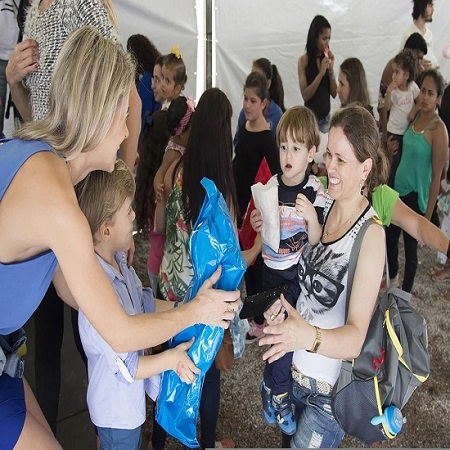

It's easier to take than to give. It's nobler to give than to take.
The thrill of taking lasts a day. The thrill of giving lasts a lifetime.
“Money is not the only commodity that is fun to give.
We can give time, we can give our expertise,
we can give our love, or simply give a smile.
What does that cost? The point is,
none of us can ever run out of something worthwhile to give."

Our Purpose
Charity is important because it helps to improve the quality of life for others,
build stronger communities, and support those who are in need.
Countless charities focus on sustainability and helping communities
become more self-sufficient. Donated funds provide a strong foundation,
whether they're used for training programs, schools, and so on.
When sustainability is a priority, individuals and communities
can support themselves and no longer depend on donations.
This benefits the world at large, so in that sense,
there is a return on the donations.
Charitable organizations are very effective at reducing poverty.
This is thanks to a focus on the factors that contribute to poverty,
such as gender inequality and limited access to education.
Over the years, the poverty rate has been cut down significantly.
In 2015, the 1990 poverty rate was cut in half five years ahead of schedule.
Charity played a big role in that achievement.
Take Action
There are several ways you can get involved with Hope Charity Organization. Below are the few of
the most popular ways.
VOLUNTEER YOUR TIME
Join us on an upcoming trip. This is one of
the most rewarding ways to give back, so
you'd get to see Hope Charity Organization in
action. Contact us to learn more about our volunteer opportunity.
GIVE/DONATE
Money - to help fund our trip and
purchase resources for the children. Supplies - we accept donations of
toys/language based activities
or games, gently used or new.
SPREAD THE WORD
We're looking for Hope Charity Organization
ambassadors to advocate or mission. We're
always looking for ways to bring awareness
to children in need around the world.